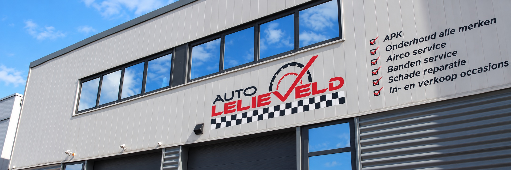

Goed voor uw auto.
Duidelijk voor u.
U bespreekt alles rechtstreeks met Dennis — eigenaar én monteur. Eerst uitleg, dan pas werk.

Eigenaar én monteurRechtstreeks contact met Dennis
RDW erkendAPK voor lichte voertuigen
Alle merkenOnderhoud, diagnose en reparatie

eigenaar en monteur
U spreekt de monteur die aan uw auto werkt.
Geen balie ertussen. Dennis luistert, onderzoekt en legt uit wat er nodig is voordat er iets wordt vervangen.
PersoonlijkEén aanspreekpunt vanaf uw vraag tot de sleuteloverdracht.
AfgestemdExtra werkzaamheden gebeuren pas na overleg.
Wat uw auto nodig heeft. Niet meer, niet minder.
Voor APK, onderhoud, storingen, airco en banden. Altijd met uitleg vooraf.
Duidelijkheid rijdt prettiger.
U weet wie er kijkt, wat er gebeurt en wanneer uw auto klaar is.
- 1Vertel wat er speelt
Bel, WhatsApp of kies online uw voorkeursmoment.
- 2Dennis onderzoekt
Uw auto wordt gericht bekeken en u krijgt heldere uitleg.
- 3Eerst akkoord
Pas na overleg gaat aanvullend werk van start.
4,9van 5
Goed werk merkt u aan de auto én aan de uitleg.
Gebaseerd op 17 openbare beoordelingen.
Wat kunnen we voor uw auto doen?
Kies een voorkeursdatum of stuur Dennis direct een bericht.